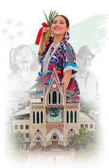
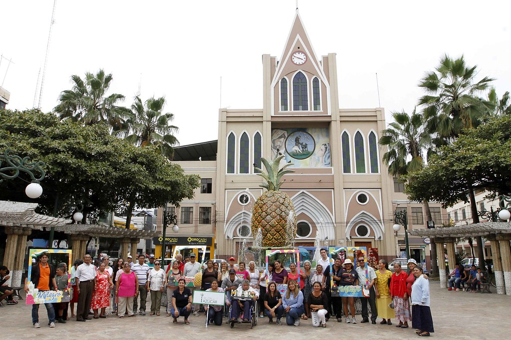
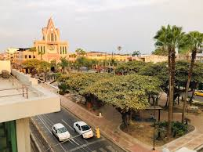

Con la llegada de los conquistadores españoles en el siglo XVI, se estableció un asentamiento colonial en lo que hoy es Milagro. Durante esta época, se fundaron diversas haciendas que se dedicaron principalmente a la producción agricola, especialmente de cultivos como el cacao, el arroz y la caña de azúcar. La introducción de la economía de plantación y la explotación de recursos naturales marca el inicio de una transformación significativa en la región.

Durante los siglos XIX y XX, Milagro experimentó un crecimiento gradual, principalmente impulsado por su agricultura y su ubicación estrategica como parte del corredor economico de la Provincia del Guayas. La construcción de infraestructuras como carreteras y la expansión de la red ferroviaria facilitaron el desarrollo económico y el comercio con otras regiones del país.
A medida que avanzaba el siglo XX, Milagro se consolidó como un centro agrícola importante en Ecuador, especializandose en la producción de arroz, maíz, banano y otros cultivos tropicales. La industrialización también jugó un papel crucial en su desarrollo, con la instalación de fábricas y plantas de procesamiento que diversificaron la economía local y atrajeron migrantes de otras partes del país en busca de oportunidades laborales.
Hoy en día, Milagro sigue siendo una ciudad próspera y en crecimiento, con una población dinámica y una economía diversificada que incluye sectores agrícolas, industriales, comerciales y de servicios. La ciudad continúa enfrentando desafíos y oportunidades relacionados con el desarrollo sostenible, la infraestructura moderna y la gestión urbana, mientras preserva su patrimonio cultural y busca mejorar la calidad de vida de sus habitantes.
Milagro es una ciudad dinámica en términos de actividad económica agrícola y un punto estratégico en la región costera de Ecuador.
Avance para más